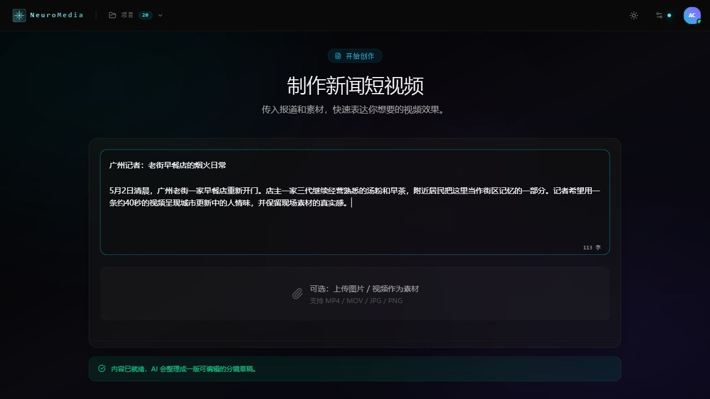
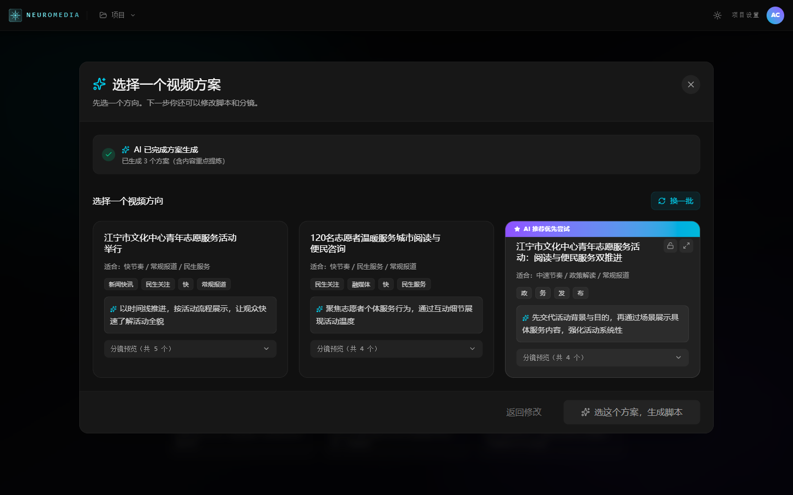
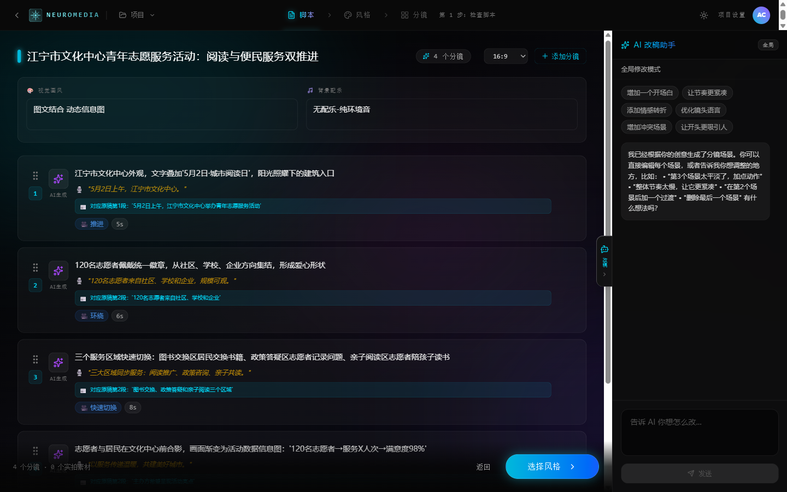
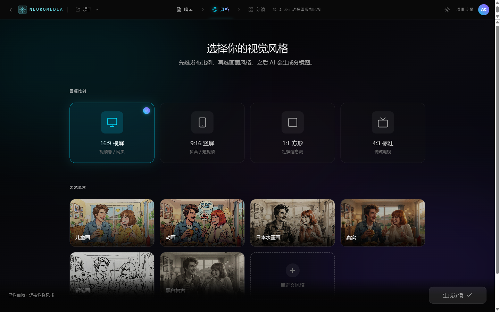
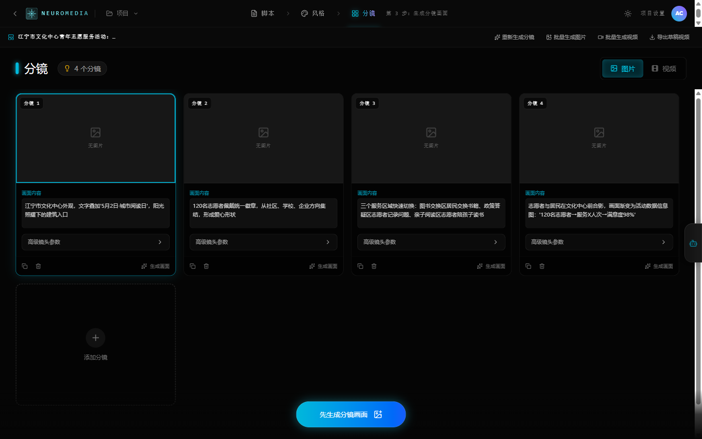
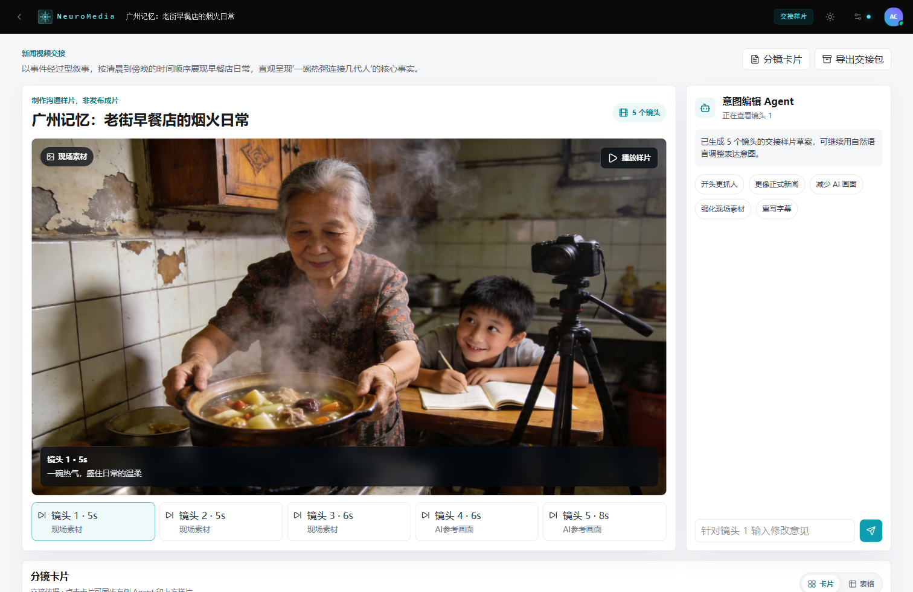
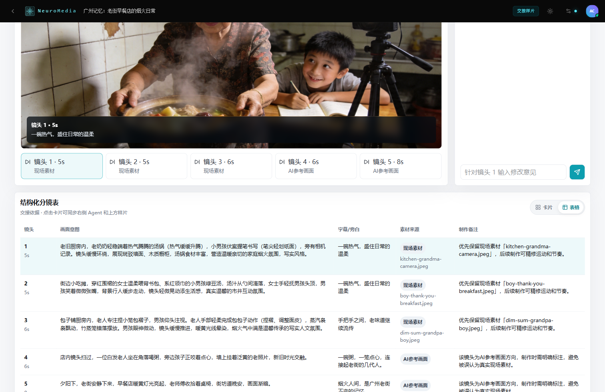

入口不从镜头、参数和时间线开始，而是让记者提交自己已经拥有的报道、现场素材和表达方向。
文字记者掌握事实，但不熟悉视频语言。入口如果直接暴露专业制作概念，会把用户挡在第一步。


在新闻场景中，AI 生成结果必须可校对。界面需要告诉用户：事实来自哪里、节奏如何组织、哪些内容还能局部修改。



研究中最强的顾虑不是“AI 不够强”，而是“AI 会不会表达错新闻重点”。所以每一步都要变成可检查节点。
记者可以用自然语言表达修改意见，但系统必须先定位镜头、展示影响范围，再让用户确认执行。
协作反馈常常是“更抓人一点”“更像新闻一点”。如果 Agent 只是聊天，用户仍然不知道它会改哪里。

最终产物不只是“看起来像视频”，还要能让制作人员快速理解镜头意图、素材来源和后续制作备注。

制作人员需要的是可见上下文，而不是零散聊天记录。分镜表保留最少但必要的交接字段。